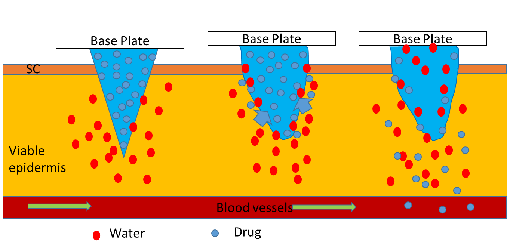
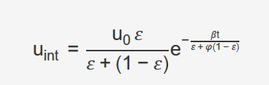
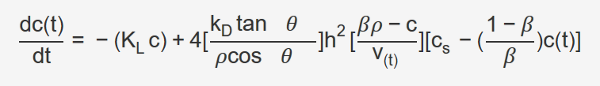
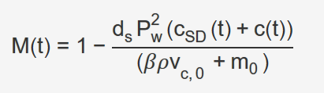
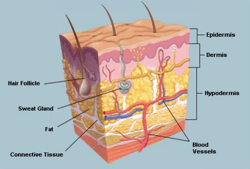
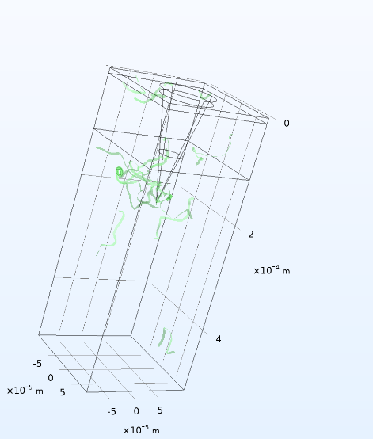
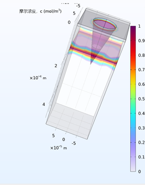
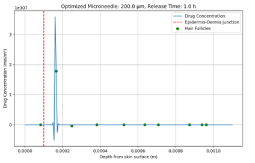

Loading...

Modeling & Software:
Mechanistic Modeling and Digital Twin-Based Microneedle Transdermal Drug Delivery System
Project Overview
Microneedles (MNs) function to continuously permeate drugs into patients over time. However, human skin acts as a natural barrier against foreign substances, including drugs. To develop effective microneedles capable of penetrating the skin, we utilized simulations to study drug release processes and skin absorption mechanisms.

We plan to develop a computational modeling toolkit integrated with digital twin technology to simulate, optimize, and personalize the drug release kinetics of dissolvable microneedle (MN) patches. By combining physics-driven simulations with patient-specific data, we aim to achieve rational design of microneedle systems, reduce design costs, and support precision medicine.
Technical Implementation
Drug Release Kinetics Simulator
- Solves time-dependent diffusion equations to predict drug concentration distributions across skin layers.
- Predicts drug release profiles based on microneedle geometric parameters (height, spacing), drug loading, and skin physiological properties (porosity, elasticity).
Mechanistically derived equations include[1]:
- Microneedle Dissolution Kinetics: Driven by polymer swelling and drug mass fraction (β).
- Skin-Drug Interaction: Depends on porosity (ε), absorption rates (β, φ), and elimination constant (K_L).
Core Equations
Moving Interface Velocity (MN-skin boundary):

- u₀: Initial injection velocity, ε: Skin porosity, φ: Tissue absorption rate, β: Blood absorption coefficient.
- Indicates time-varying boundary conditions correlated with drug formulation dissolution rates.
Drug Concentration Dynamics:

- ok_D: Drug dissolution rate constant, h: Microneedle height, c_s: Drug solubility, v(t): Skin layer volume, C: Drug concentration in skin, β: Drug mass fraction in MN, tanθ: Base-to-height ratio, K_L: Elimination rate constant, ρ: Drug matrix density.
- oResults show that skin drug concentration increases with drug loading and MN height.
Cumulative Release:

- oP_w: Microneedle spacing, v_{c,0}: Initial skin volume, m₀: Baseplate drug mass, C_SD: Drug concentration in solid phase, d_s: Skin depth.
- oPenetration levels increase with reduced spacing width.
A computational program will be developed to calculate drug release profiles based on input parameters.
# Importing necessary libraries
import math
# Function to calculate interface velocity
def calculate_interface_velocity(u0, epsilon, phi, beta, t):
denominator_exp = epsilon + phi * (1 - epsilon)
exponent = -beta * t / denominator_exp
u_int = u0 * epsilon * math.exp(exponent)
return u_int
# Importing additional libraries for solving ODEs
import numpy as np
from scipy.integrate import solve_ivp
# Function to solve drug concentration over time
def solve_drug_concentration(t_span, c0, params, v_func, t_eval=None):
"""
params: 包含K_L, k_D, theta, rho, beta, h, c_s的字典
v_func: 函数，输入t返回当前体积v(t)
"""
K_L = params['K_L']
k_D = params['k_D']
theta = params['theta']
rho = params['rho']
beta = params['beta']
h = params['h']
c_s = params['c_s']
# Defining the ODE function
def ode_func(t, c):
v = v_func(t)
theta_rad = np.deg2rad(theta) # 假设theta以度为单位
factor = 4 * (k_D * np.tan(theta_rad) / (rho * np.cos(theta_rad))) * h**2
term1 = -K_L * c
term2_part1 = (beta * rho - c) / v
term2_part2 = c_s - ((1 - beta)/beta) * c
term2 = factor * term2_part1 * term2_part2
dcdt = term1 + term2
return dcdt
sol = solve_ivp(ode_func, t_span, [c0], t_eval=t_eval, method='LSODA')
return sol.t, sol.y[0]
# Function to calculate cumulative drug release
def calculate_cumulative_release(d_s, P_w, c_SD_t, c_t, beta, rho, v_c0, m0):
numerator = d_s * (P_w**2) * (c_SD_t + c_t)
denominator = beta * rho * v_c0 + m0
M_t = 1 - numerator / denominator
return M_t
# 示例参数
u0 = 1e-6 # 初始速度
epsilon = 0.5
phi = 0.3
beta = 0.2
t = 10 # 时间点
# 计算界面速度
u_int = calculate_interface_velocity(u0, epsilon, phi, beta, t)
print(f"Interface Velocity at t={t}: {u_int:.2e} m/s")
# 药物浓度参数
params = {
'K_L': 0.1,
'k_D': 0.05,
'theta': 30, # 度
'rho': 1000,
'beta': 0.2,
'h': 1e-4,
'c_s': 500
}
v_func = lambda t: 0.001 # 假设体积恒定
t_span = [0, 10]
c0 = 0.0
# 求解浓度动态
time_points, c_values = solve_drug_concentration(t_span, c0, params, v_func, t_eval=np.linspace(0,10,100))
# 计算累积释放量（示例取最后一个时间点）
d_s = 0.01
P_w = 1e-3
c_SD_t = 100 # 假设皮肤药物浓度
v_c0 = 0.001
m0 = 0.5
M_t = calculate_cumulative_release(d_s, P_w, c_SD_t, c_values[-1], beta, params['rho'], v_c0, m0)
print(f"Cumulative Release at t={t}: {M_t:.4f}")
COMSOL Multiphysics® Modeling Workflow
- Developed a TDD single-needle model and scalp-skin model in COMSOL Multiphysics® to simulate microneedle insertion mechanics, polymer swelling, and drug diffusion in layered skin (stratum corneum, epidermis, dermis).
- Supports rapid parameter optimization (e.g., needle height, dissolution rate).
Geometry Modeling
- u₀: Initial injection velocity, ε: Skin porosity, φ: Tissue absorption rate, β: Blood absorption coefficient.
- Indicates time-varying boundary conditions correlated with drug formulation dissolution rates.

- Solid Mechanics: Simulates stress distribution during microneedle insertion.
- Dilute Species Transport:Simulates drug diffusion in skin porous media.
Key Parameters
| Parameter | Value | Description |
|---|---|---|
| Microneedle height (h) | 600 μm | Ensures penetration into the dermis without reaching nerve endings to avoid pain |
| Epidermal elastic modulus | 0.5 MPa | Characterizes flexible support layer properties |
| Drug diffusion coefficient | 1×10⁻¹²–1×10⁻¹⁰ m²/s | Depends on drug molecular weight |
Simulation Results Example: Drug diffusion process


pen-Source Python Tool
- Provides 1D/2D drug diffusion modeling and analysis scripts.
- Future plans include integrating machine learning models to enhance simulation accuracy.
Objective
This Python script simulates and optimizes transdermal drug diffusion via microneedles on the scalp. It aims to determine optimal microneedle length and drug release duration for targeted follicular delivery while minimizing epidermal residue.
Key Components
- Parameter Setup: Defines scalp properties (e.g., layer thickness, follicular density) and drug diffusion coefficients.
- Simulation Function: Uses Fick’s second law to model time-dependent diffusion and drug clearance.
- Objective Function: Evaluates efficiency via follicular concentration and epidermal residue minimization.
- Optimization Process: Employs SciPy’s L-BFGS-B algorithm to identify optimal parameters.
- Visualization: Plots drug concentration profiles and outputs optimal microneedle length/release time.

Dependencies: SciPy, NumPy, Matplotlib
Code
# Import necessary libraries
import numpy as np
import matplotlib.pyplot as plt
from scipy.optimize import minimize
# ---------------------------
# 参数设置（男性头皮特性）
# ---------------------------
layer_epidermis = 100e-6 # 表皮层厚度
layer_dermis = 1e-3 # 真皮层厚度
num_layers = 200 # 模拟层数
hair_follicle_density = 10 # 毛囊密度
# 扩散系数
D_epidermis = 1e-12 # 表皮层扩散系数
D_dermis = 5e-10 # 真皮层扩散系数
D_follicle = 2e-9 # 毛囊区域扩散系数
clearance_rate = 1e-1 # 清除率
C0 = 1.0 # 初始药物浓度
# 初始针头长度和直径
needle_length_initial = 200e-6
needle_diameter = 50e-6
simulation_time = 8 * 3600 # 模拟时间为8小时
dt = 0.1 # 时间步长
# 初始化空间网格
total_depth = layer_epidermis + layer_dermis
dx = total_depth / num_layers
x = np.linspace(0, total_depth, num_layers)
# 随机分布毛囊位置
np.random.seed(42)
follicle_positions = np.random.choice(num_layers, size=hair_follicle_density, replace=False)
# 初始化扩散系数矩阵
D = np.full(num_layers, D_dermis)
D[x <= layer_epidermis] = D_epidermis
D[follicle_positions] = D_follicle
# 初始化药物浓度
C = np.zeros(num_layers)
C[x <= needle_length_initial] = C0
# 模拟头皮扩散过程
def simulate_scalp_diffusion(C, D, dt, dx, num_steps, clearance_rate, num_layers):
# 模拟头皮扩散过程
for _ in range(num_steps):
C_new = np.copy(C)
for i in range(1, num_layers-1):
flux = D[i] * dt / dx**2 * (C[i+1] - 2*C[i] + C[i-1]) # 扩散方程
if np.isnan(flux) or np.isinf(flux): # 检查flux是否有效
return C_new
C_new[i] = C[i] + flux - clearance_rate * C[i] * dt
if np.isnan(C_new[i]) or np.isinf(C_new[i]): # 检查新浓度值
return C_new
C = np.copy(C_new)
return C
# 目标函数，计算毛囊浓度和表皮残留
def objective(params):
# 检查参数有效性
if np.isnan(params).any() or (params <= 0).any():
return np.inf
# 分解参数
needle_length, drug_release_time = params
# 限制针长度
if needle_length > layer_epidermis * 1.2:
return np.inf
# 计算药物释放步数
num_steps = int(np.round(drug_release_time / dt))
if num_steps <= 0:
return np.inf
# 模拟针头插入后的初始浓度分布
needle_region = (x <= needle_length)
C_initial = np.zeros(num_layers)
C_initial[needle_region] = C0
# 进行扩散模拟
C_final = simulate_scalp_diffusion(C_initial, D, dt, dx, num_steps, clearance_rate, num_layers)
# 检查计算结果
if np.isnan(C_final).any() or np.isinf(C_final).any():
return np.inf
# 计算目标值：毛囊浓度和表皮残留
follicle_concentration = np.mean(C_final[follicle_positions])
epidermal_residue = np.mean(C_final[x <= layer_epidermis])
return -follicle_concentration + 10 * np.clip(epidermal_residue, 0, None)
# 初始猜测和约束
initial_guess = [200e-6, 7*3600]
bounds = [(50e-6, 300e-6), (3600, 8 * 3600)]
# 运行优化
result = minimize(objective, initial_guess, bounds=bounds, method='L-BFGS-B', options={
'ftol': 1e-6,
'gtol': 1e-5,
'maxfun': 150
})
# 提取优化结果
optimized_length, optimized_release_time = result.x
# 模拟优化后的药物分布
needle_region_opt = (x <= optimized_length)
C_initial_opt = np.zeros(num_layers)
C_initial_opt[needle_region_opt] = C0
num_steps_opt = int(optimized_release_time / dt)
C_final_opt = simulate_scalp_diffusion(C_initial_opt, D, dt, dx, num_steps_opt, clearance_rate, num_layers)
# 绘制浓度分布
plt.figure(figsize=(10, 6))
plt.plot(x, C_final_opt, label='Drug Concentration')
plt.axvline(layer_epidermis, color='r', linestyle='--', label='Epidermis-Dermis Junction')
plt.scatter(x[follicle_positions], C_final_opt[follicle_positions], c='green', label='Hair Follicles')
plt.xlabel('Depth from skin surface (m)')
plt.ylabel('Drug Concentration (mol/m³)')
plt.title(f'Optimized Microneedle: {optimized_length*1e6:.1f} μm, Release Time: {optimized_release_time/3600:.1f} h')
plt.legend()
plt.grid(True)
plt.show()
# 输出优化结果
print(f"Optimized Microneedle Length: {optimized_length*1e6:.1f} μm")
print(f"Optimized Drug Release Time: {optimized_release_time/3600:.1f} hours")
print(f"Target Follicle Concentration: {np.mean(C_final_opt[follicle_positions]):.3e} mol/m")
print(f"Epidermal Residue: {np.mean(C_final_opt[x <= layer_epidermis]):.3e} mol/m")
Future Directions
- 3D Multi-Scale Modeling: Incorporate capillary and lymphatic transport mechanisms.
- Clinical Validation: Optimize models by testing prediction accuracy against wet-lab experiments.
- App Development: Utilize COMSOL’s built-in app development tools to create user-friendly interfaces for parameter adjustment.
- Python-Based Scalp Drug Diffusion Simulation & Optimization
- Digital Twin Integration
- Establishes personalized skin models using patient biomarker data (e.g., skin hydration, thickness) to simulate and optimize microneedle designs for individualized therapy.
- Replaces invasive skin biopsies with computational predictions, reducing experimental costs.
Based on Defraeye et al.(2020), we hope to realize:
- Clinical Input: Non-invasive measurement of patient-specific skin parameters.
- Model Calibration: Nonlinear regression fitting using biomarker data (e.g., blood drug levels).
- Therapy Optimization: Predicts optimal MN geometry and drug loading.
References
[1] Yadav PR, Han T, Olatunji O, Pattanayek SK, Das DB. Mathematical Modelling, Simulation and Optimisation of Microneedles for Transdermal Drug Delivery: Trends and Progress. Pharmaceutics. 2020;12(8):693. doi:10.3390/pharmaceutics12080693.
[2] Al-Qallaf B, Das DB. Optimizing microneedle arrays to increase skin permeability for transdermal drug delivery. Ann N Y Acad Sci. 2009;1161:83-94. doi:10.1111/j.1749-6632.2009.04083.x.
[3] Park JH, Prausnitz MR. Analysis of Mechanical Failure of Polymer Microneedles by Axial Force. J Korean Phys Soc. 2010;56(4):1223-1227. doi:10.3938/jkps.56.1223.
[4] English RS Jr, Ruiz S, DoAmaral P. Microneedling and Its Use in Hair Loss Disorders: A Systematic Review. Dermatol Ther (Heidelb). 2022;12(1):41-60. doi:10.1007/s13555-021-00653-2.
[5] Kim KS, Ita K, Simon L. Modelling of dissolving microneedles for transdermal drug delivery: theoretical and experimental aspects. Eur J Pharm Sci. 2015;68:137-143. doi:10.1016/j.ejps.2014.12.008.
[6] Saha I, Rai VK. Hyaluronic acid based microneedle array: Recent applications in drug delivery and cosmetology. Carbohydr Polym. 2021;267:118168. doi:10.1016/j.carbpol.2021.118168.